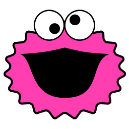
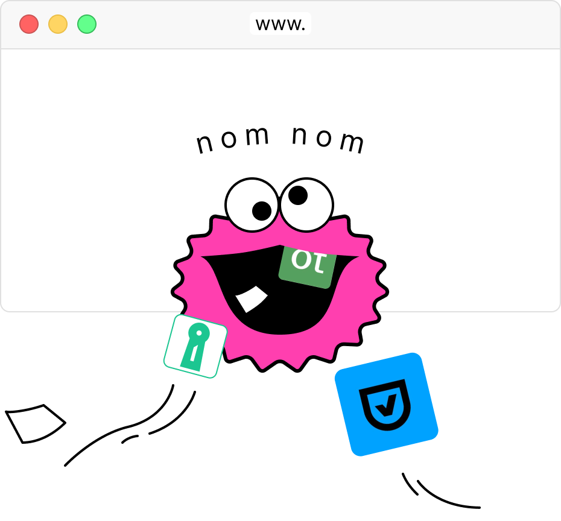

It says no for you
The one job. Every page leads back to it: you stop clicking "Accept all", and the extension does the boring rejecting.
One small system for cookieaway.com: Kooky, a pink monster with googly eyes, ink outlines, hard shadows and very little else. Everything on this page is a working component you can lift into the landing page.
Cookie banners all look the same: blue buttons, grey text, a giant "Accept all". Cookie Away should look like the opposite, something you'd stick on your laptop. The icon already says it: flat pink, a thick black outline, googly eyes and a mouth that's mostly appetite.
The one job. Every page leads back to it: you stop clicking "Accept all", and the extension does the boring rejecting.
It checks its own clicks, leaves pay-or-accept walls alone and never follows a link away from the page. We say that plainly rather than promising magic.
Free, MIT, no server, no analytics. One person built it to make browsing a little less annoying, and the site should feel that size.
Cookie Away clicks "Reject" so you don't have to.
Revolutionary AI-powered consent management.
Some banners still get past it. Send us the link.
Blocks 100% of cookie banners, guaranteed.
It found the reject button hidden three screens deep.
NO MORE COOKIES!!! 🍪🔥 Game-changer!
No long dashes in copy, sentence case everywhere, "consent tools" not "CMPs" (except in the code), and we say "reject", never "block".
Kooky is a bit kooky: a pink bottle-cap of a monster whose eyes never quite agree. Noel's drawing, with the pupils split out so they follow your pointer, each at its own pace, and drift back to his cross-eyed rest when you stop. He blinks now and then. Same drawing at every size; the favicon is the SVG too.


Kooky bursting out of a browser window and munching the banners, consent-tool logos flying off. It's the one illustration that explains the product without words, so it leads the homepage.
Use it on white or paper, never cropped tighter than the window. The consent-tool logos are part of the joke: keep them small and tumbling, never as endorsements.
On pink, Kooky keeps his own pink body: the ink outline separates it. Clear space is one eye's width on every side.
Kooky is our own monster, not a borrowed one. No blue fur and no Sesame Street references.
Cookie Pink is the icon's exact pink. It is a fill, never text on paper: pink text uses Pink Deep. Ink text on pink passes AAA, so primary buttons are pink with ink labels. Night comes from the arcade reference and only shows up in the dark band and the easter egg.
Same face as the promo video and store art. Headlines at 800 with negative tracking feel like stickers; body at 400, 17px, 1.6 line height. JetBrains Mono only for code and specs. Fluid sizes run from 360px to 1440px.
Reject all.
When a page shows a consent banner, Cookie Away finds it and clicks the reject option. If there isn't one, it opens the settings and switches everything off.
News sites often hide "Reject" behind a settings screen full of "legitimate interests". Cookie Away opens it, clicks "Object all", switches off whatever is still on, and saves. If even that fails, it leaves the banner alone. Links are Pink Deep with a 2px underline.
27
Works in Chrome, Edge, Brave and Arc.
Last updated 1 November 2026
Load it from chrome://extensions, then press ⌘ R to reload.
Anything you can press or that holds content gets a 2px ink outline and a hard offset shadow, no blur. Hover lifts it up and left, press pushes it flat. Screenshots of real sites are the exception: they get the soft shadow so they read as "the web", not as us.
Icons are drawn on a 24px grid with a 2px round stroke, the same family as the extension popup. Put them in a pink sticker square when they lead a card. Cookies are the only illustration: one SVG symbol for big sizes, a CSS one for crumbs and inline use.
Max width 1200px, fluid gutters, reading width 40rem. It's a single landing page, so most sections are a heading plus two or three columns. Spacing runs on a 4px base.
All classes are prefixed ca- and live in styles/components.css. Copy the markup from this page; nothing depends on a framework.
Rules for 27 consent tools, and wording in about 20 languages for the rest.
Or opens the settings, objects to everything and saves.
The banner has to actually go away. If not, it tries once more.
Stuck in a reload loop? It pauses on that site for 24 hours.
27
consent tools it knows by name
~20
languages it reads banners in
0
servers, accounts or analytics
1 click
to turn it off for a site
Only facts we can stand behind. Benchmark numbers wait until we've tested on sites we haven't tuned for.
Some news sites only let you reject if you subscribe. Cookie Away never clicks "subscribe", so on those it leaves the banner for you to decide.
chrome://extensions and turn on Developer mode.# no build step, it's plain JavaScript
$ git clone https://github.com/upstrategylab/cookie-away.gitNo. There's no server and no analytics. The only exception is the optional Jev feature, which is off by default and needs your own API key.
It leaves them alone. Rejecting there means paying, and that's your call, not the extension's.
Hiding a banner doesn't tell the site you said no, and some sites keep tracking until you answer. Cookie Away actually answers.
| Cookie Away | Consent-O-Matic | Banner hiders | |
|---|---|---|---|
| Answers "no" to the site | ✓ | ✓ | – |
| Digs into settings screens | ✓ | ✓ | – |
| Reads unknown banners by their wording | ✓ | – | ~ |
| Works with zero setup | ✓ | ~ | ✓ |
Placeholder rows to show the component. Be generous to the others; the README already recommends them.
Two pieces carry the page. The banner demo explains the product in four seconds without words. Googly mode is the fun bit: switch it on and click anything on this page to stick a pair of eyes on it, the way the icon has them.
When it's on you can tell: the toggle turns ink with a pink pulse, the window gets a pink frame, the cursor becomes an eye, and a pill at the bottom counts the eyes and has Peel off and Done.
Eye size follows the thing you click (22% of its shorter side, 14–64px). Pupils are springs with a little gravity, so they wobble when you move fast. All of it switches off with prefers-reduced-motion.
The landing page is short. Someone arrives from LinkedIn, GitHub or the store, sees what it does in the first screen, and either installs it, stars it, or reads on to check it's safe.
It's free under the MIT licence. If you find a site where it doesn't work, send the link, or fix it and send a pull request.
Stickers land with an overshoot, banners leave like they've been eaten, eyes follow you. Nothing loops except the arcade sprite and the occasional blink. Click a curve to run it.
Two bites and a wobble, 840ms. Click it.
Stickers landing, staggered 70ms. Click to replay.
Twelve crumbs fly out when a banner goes. Click it.
| Token | Value | Use |
|---|---|---|
--d-1 | 120ms | Hover, press |
--d-2 | 240ms | Toggles, accordions, menus |
--d-3 | 480ms | Reveals, the banner leaving |
--d-4 | 900ms | Hero entrance, the chomp sequence |
--stagger | 70ms | Lists, card rows |
A hidden maze game for later. Kooky runs a maze of consent banners eating cookies; the ghosts are "Accept all" buttons. It's our own game in the maze-chase genre, not a copy of anyone's: our sprite, our maze, our rules. This sheet only sets the look and the trigger.
Typing "cookie" anywhere fires a ca:arcade event (already wired in js/googly.js). Also a tiny cookie in the footer for people who don't type at websites.
Night background, pink chomper with one googly eye, cookies as pellets, banner-blue "Accept all" ghosts. Ink walls with pink edges.
Eat every cookie. A "Reject all" power-up turns the ghosts grey for 6 seconds. Score is "banners rejected". Arrow keys and swipe.
Defaults are set so the page can be built now. Each of these changes something visible.
Static files from /site, one edge function for the star count. No analytics, no cookies, fonts self-hosted.
Because he's a bit kooky and his eyes are all funny. He can be "he" in copy, and the toasts can say "Kooky rejected…".
Every site, both extensions, the method and the caveats, on cookieaway.com/benchmarks. The homepage shows the headline numbers only.
Hero with the illustration, how it works, careful by design, results, install, FAQ, footer. Copy checked with Jev Writer.
Default: a small button in the footer next to "This site uses no cookies. Obviously." The hero stays about the product.
The promo video and store art use #FF3EA5, a near-miss of the icon's #FF3FAF. Default: switch them on the next render.
site/styles/, googly eyes in site/js/googly.js